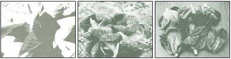

Knowing a few little "tricks of the trade" can make gardening-which is always a satisfying experience-a total joy. Occasionally, these timesaving, moneysaving, or just plain energy-con serving tips can be found in horticulture books and magazines, but more often they're passed along by oldtimers who've been digging in the good earth for decades. It was such a man as this who taught me the "cabbage magic" trick.
"You can grow more than one head of cabbage per plant, you know," he remarked one day. I didn't really believe him (who would?), but I tried his method anyway ... and it worked! Anyone can do it, and the technique should be especially helpful if your growing season is too short for producing two crops (in spring and fall).
The procedure is easy: When you harvest the main cabbage head (probably at about this time of year), just leave enough bottom leaves to constitute a viable plant (see the photograph). If you cut below the lowest leaves, the stubble will wither quickly and die ... and you want it to live long enough to be the sprouting surface for a second crop. Now, make believe what's left is a whole new plant. Treat it like one, cultivating it, watering it, and even working some rich manure into the first inch of soil (being careful not to injure the roots).
Before long, you'll see some small sprouts forming around the rim of the main head's stub. Keep on treating the plant like a new one, and in time these little "sub-heads" will grow to the size of a fist. There will probably be several of the shoots-perhaps as many as six-and, in total, they'll provide almost as much food value as the big main head did ... but with a delightful difference. The cores of these little cabbages will be pale green-almost white-leafy, and tender. The outer leaves will be darker green, but still tender and tasty. They're all, in fact, simply delicious!
The small size and fine quality of the minicoles make them especially suitable for Chinese stir-fry, delicate steaming, or soups and stews. (Since you'll be harvesting them in the late fall when the first chill winds are blowing, the savory leaves are particularly appropriate for soup.)
This bit of cabbage magic isn't difficult to perform ... but it can increase your Brassica yield dramatically, and that should make it a very worthy addition to your private collection of garden know-hows!
|
LEFT. At harvest time, cut the main head just above the bottom leaves, as shown. The stub and leaves that remain will provide a sprouting surface for new, young plants. MIDDLE. Here a cluster of ""subheads"" has sprung up from the stubble of the main head Note that the original bottom leaves have completely died off and withered away. RIGHT. The cluster was separated into six (count 'em!) tasty fist-sized heads. Each has a tender, leafy white core and flavorful outer leaves. |
 |
|